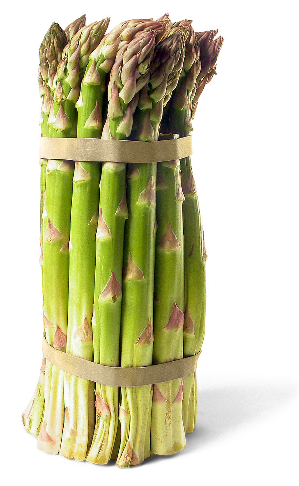

DIETA DEL ESPÁRRAGO

El espárrago es originario del Mediterráneo: un vegetal introducido por los romanos durante el periodo de conquista.
Compuesto por un alto nivel de agua pero bajo en fibra y en calorías. Contiene muchas propiedades entre ellas Vitamina A y C, potasio, fósforo, calcio, magnesio y antioxidantes. Además es un buen remedio para el sistema nervioso y para fortalecer la mente.